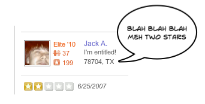

Obnoxious Yelp reviewers getting you down? Sick of that guy who wants to be the Hunter S. Thompson of food reviews? Had an epiphany about the incommensurability of taste?
Sounds like you need Yelp Without Pity, a Safari 5 extension for Yelp that lets you hide anybody you don't want to see — forever!
First of all, you must be running Safari 5 to use this.
Beta.
Do I really need Safari 5 to use this? You really need Safari 5.
How do I unblock somebody? That's complicated.
Why would I want to block somebody's opinions? Don't you want to celebrate the flowering of expression that social media has unleashed? Stop that.
Yelp Without Pity is open source code offered under the BSD license.
You can download the source code for this project in either zip or tar formats.
You can also clone the project with Git by running:
$ git clone git://github.com/cobralibre/Yelp-Without-Pity